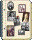

Wilson Photographs
![[floral bar]](../../../graphics/3bar.gif)
This page is for our photographs of our Wilson family. We are eager to have more. You can get in touch with Linda at the E-mail address on our main page.
Just click on a name to get to the pictures.
Albers, Nancy
Angier, Ida Margaret (Honey)
Angier, Jeffrey Nuhad
Angier, Liza Pamela (Pugeda)
Angier, Peter Bowley
Bannister, Tracy
Bell, Erika (Pauls)
Bell, James Robert
Bell, Kellie Dawn
Bell, Richard Steven
Bell, Robert (Bert)
Bell, Sandra (Honey)
Bell, Steven Robert (Steve)
Bevin, Peter Courtney Frank (Pete)
Botham, Isabel Laurene
Burdon, Alicia Joan (Herrington)
Burdon, Nicole
Cline, Josiah
Cline, Lukas (Luke)
Cline, Kellie Dawn (Bell)
Clinton, Andrew McKenzie (Andy)
Clinton, Bailey Alyssa
Clinton, Edward
Clinton, Lauren Elizabeth
Clinton, Michael Edward (Mike)
Clinton, Norah Elizabeth (McKenzie)
Clinton, Stephanie Anne
Clinton, Timothy David (Tim)
Clinton, Tracy (Bannister Coulthard)
Clinton, Virginia Erin
Coulthard, Dylan Jeremy
Coulthard, Tracy (Bannister)
Diminie, Chantel Skye
Diminie, Megan Anne
Diminie, Natalie Rose
Diminie, Stuart Todd
Diminie, Todd
Diminie, Whitney Anne (Lake)
Fulsom, Harriet Ruth Grace (Wilson Massey) (Grayce)
Greenley, Allen
Greenley, Anne (White), 1877-1971
Guivernau, Xenia
Harren, Elizabeth (Young) (Betty)
Harris, Benjamin (Ben)
Harris, Cameron Jakob
Harris, Kellie Dawn (Bell Cline)
Hastings, Isabel Laurene (Botham)
Hastings, Jeffrey (Jeff)
Hastings, Larry
Hastings, Luke Jeffrey Lawrence
Hastings, Marilynn (Honey)
Hastings, Nancy (Albers)
Henderson, Pamela Mary
Hermiston, Jessie, 1825-1909
Herrington, Alicia Joan
Herrington, Anthony
Herrington, Anthony (Ted)
Herrington, Julie (Horlick)
Herrington, Margaret Donna Marie (Knight) (Donna)
Honey, Carla Jane
Honey, Charles Harold Wesley (Charlie)
Honey, Charles Wilson
Honey, Clarice
Honey, Ida Margaret
Honey, Jane Louise (Potter)
Honey, Julie
Honey, Marilynn
Honey, Marion Lillian Frances (Wilson), born 1911
Honey, Mark
Honey, Sandra
Hookings, Joan Isabelle (Knight Isaac)
Hookings, Miriam Louisa (Mim)
Hookings, Thomas Griffin McGlashan (Tom)
Horlick, Julie
Isaac, Jasmine
Isaac, Joan Isabelle (Knight)
Isaac, Justin Leigh
Isaac, Kevin Leigh
Isaac, Pamela Layne
Jones, Jean (Sweet)
Jones, Mabel (White)
Knight, Crystalynn
Knight, Donald Claire (Claire)
Knight, Donald Stewart, ca 1909-1983
Knight, Joan Isabelle
Knight, Margaret Donna Marie (Donna)
Knight, Ruby Almira (Pollock)
Knight, Sally-Jo
Laidlaw, Eliza Helen
Laidlaw, Emileigh
Laidlaw, Kenneth (Ken)
Laidlaw, Pamela Layne (Isaac)
Lake, Courtney Janet
Lake, Darcy Malcolm
Lake, James Russell (Russell)
Lake, Janet Ruth (McKenzie)
Lake, John Russell
Lake, Pamela Mary (Henderson)
Lake, Rachel Beryl
Lake, Raven McKenzie
Lake, Whitney Anne
Lake, Xenia (Guiverneau)
Massey, Donald Vincent
Massey, Harriet Ruth Grace (Wilson) (Grayce)
Massey, Velma Ellen Isobel (Peterson)
McCubbin, Dorothy (White)
McCubbin, Ruth
McDonald, Clara Kathleen (Richards)
McDonald, Dennis Richards
McDonald, Elwood A.
McDonald, Martha Lynn
McKague, Carla Anne
McKague, Eric Richards (Rick)
McKague, Margaret Lillian (Richards), 1913-1985
McKague, Margaret Linda (Linda)
McKague, Michelle Elizabeth
McKague, Robert Eric (Eric)
McKenzie, Andrew Roland
McKenzie, Edith Ruth (Richards)
McKenzie, James Roland (Jamie)
McKenzie, Janet Ruth
McKenzie, Martha Lynn (McDonald)
McKenzie, Matthew James
McKenzie, Norah Elizabeth
McKenzie, Roland
Moran, Andrew Réné James
Moran, Erica Sebastienne (van Will) (Sebastienne)
Moran, Sean Sebastian James
Murray, Carla (Honey)
Murray, Damon K.
Murray, Joel Tyson
Osterhout, Frances C.
Osterhout, James Edgar
Osterhout, Ruth Ann, 1840-1922 (Annie)
Parthun, Felice Roseanne Janet
Pauls, Erika
Peterson, Velma Ellen Isobel
Petherick, Jack
Petherick, Julie (Honey)
Petherick, Ruth (McCubbin)
Pollock, Isabelle
Pollock, Ruby Almira
Pollock, William
Potter, Jane Louise
Pugeda, Liza Pamela
Richards, Clara Jessie (Wilson), ca 1886-1938
Richards, Clara Kathleen
Richards, Doris Helen, 1919-1972
Richards, Edith Ruth
Richards, James Nelson, 1886-1926 (Jim)
Richards, Margaret Lillian, 1913-1985
Richmond, Brad William
Richmond, Graeme Donald Wolfe
Richmond, Paul Stanley Wolfe
Rosevear, Harriet (White) (Hattie)
Schell, Jasper Zephram Hookings
Schell, Michael (Mike)
Siple, Doris Helen (Richards), 1919-1972
Spagnolo, Eric
Spagnolo, Lauren Elizabeth (Clinton)
Sweet, Jean
Tessier, Crystalynn (Knight)
Tuer, Adam Gordon
Tuer, Bethany Anne
Tuer, David William
Tuer, Gordon
Tuer, Stephanie Anne (Clinton)
Van Norman, Joan
van Will, Erica Sebastienne (Sebastienne)
van Will, Margaret Linda (Linda)
van Will, Sebastianus Jozef Egidius (Van, Gidi)
Ward, Clarice (Honey)
Ward, Ray
White, Anne, 1877-1971 (Annie)
White, Bertha Luella, 1892-1950
White, Dorothy
White, Freeman
White, Harriet (Hattie)
White, Irwin
White, Joseph Barton
White, Mabel
White, Margaret Jessie, 1884-1968 (Maggie)
White, Truman
Wilson, Bertha Luella (White), 1892-1950
Wilson, Clara Jessie, ca 1886-1937
Wilson, Clara Margaret
Wilson, Harriet Ruth Grace (Grayce)
Wilson, Jessie, 1854-1937
Wilson, Jessie (Hermiston), 1825-1909
Wilson, Lillian May, 1870-1930 (Lil)
Wilson, Mabel Luella Josephine, born ca 1912
Wilson, Marion Lillian Frances, born 1911
Wilson, Ruth Ann (Osterhout), 1840-1922 (Annie)
Wilson, Samuel Arthur, 1878-1944 (Artie)
Wilson, Thomas Franklin, 1881-1954 (Frank)
Wilson, William, 1846-1920
Wilson, William Irwin, 1916-1965 (Billy)
Wilson, William Edgar, 1870-1950 (Will)
Wolfe, Benjamin Louis (Ben)
Wolfe, Carla Anne (McKague)
Wolfe, Jennifer Anne (Jen)
Wolfe, Menya Ruth, 1964-2001
Wolfe, Morris
Wolfe-Parthun, Emma Mary Laurel
Wolfe-Parthun, Hannah Margaret Rose
Wolfe-Parthun, Noah Raymond Morris
Wynn, Grace (Young)
Young, Clayton, 1911-1999
Young, Dorothy (White McCubbin)
Young, Elizabeth (Betty)
Young, Grace
Young, Mabel Luella Josephine (Wilson), born ca 1912
Back to Family Album page
mckague.com Search our Site Our Genealogy Page Our Photographs Links Pure Gold Guestbook Credits